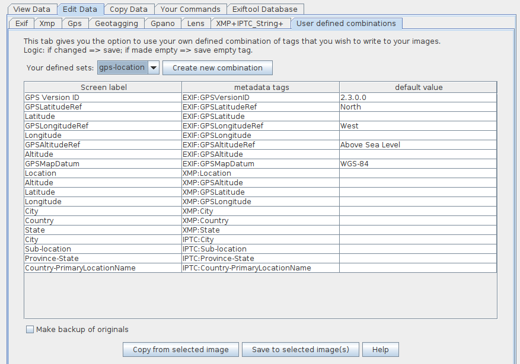

Create and use user defined metadata tag combinations
Version 1.6 of jExifToolGUI gives you the option to define your own set of metadata tags that you want to add to your images. You can even define multiple metadata combination sets for different purposes: landscapes, sport, archiving, wildlife, family, etcetera.
Below the maintenance screen and edit screen. Click to see a full-size version in a separate tab.
 The Edit screen where you use your defined metadata sets to write those tags to your images.
The below video shows:
how to create combinations.
how to use this combination on your images.
The created combinations in this movie are based om metadata tags already known to Exiftool. These are the standard Exif, XMP, IPTC, etcetera metadata tags.
For 99% of the users this is all they will need. jExifToolGUI #01: Create and use User defined Combinations
Note: The video is displayed by default in 1024x576, but the maximum resolution is 1920x1080. (see Youtube bottom right icon when playing)
This video shows the basis.
The tag names will not be stored in alphabetical order but in the order you created/saved them.
You can also cut/copy & paste tags: The second movie shows how to use Copy&Paste from (or to) other apps like spreadsheets (Excel, Google Spreadsheets, etc.) where you define your combinations. jExifToolGUI #02: user combis copy paste
Note: The video is displayed by default in 1024x576, but the maximum resolution is 1920x1080. (see Youtube bottom right icon when playing)
Creating non-existing tags to add to your images
Below only gives you a very brief overview what can be done.
Exiftool allows you to define metadata tags that "do not exist yet". For this you need to create a custom config file where you define those "brand new" metadata tags.
This is described at the Exiftool site
Another example is delivered with jExifToolGUI itself. It is called isadg-struct.cfg and is based on the isad(g) archiving standard (based on this xml scheme. The isadg-struct.cfg I created can be found here online, but it is also located in the jexiftoolgui_data folder inside your user home folder. (Just to make sure users do not corrupt this file, it is overwritten on every program start).
When wanting to use non-existing tags, you first create the cfg file containing these tags. Then you define your combination set in the Tools screen, based on the tagnames in your configuration file.
Upon saving this set, you also use the file chooser to select the cfg file you created. jExifToolGUI will then copy the cfg file into the jexiftoolgui_data folder and will store the link between the tags and the configuration file in the database. When you want to use this combination set, jExifToolGUI will also use the configuration file (has to use the file otherwise the tags can't be written). Note: Exiftool, thereby jExifToolGUI, can read those tags from the images at any time. You only need the config file when wanting to write the tags to your images.